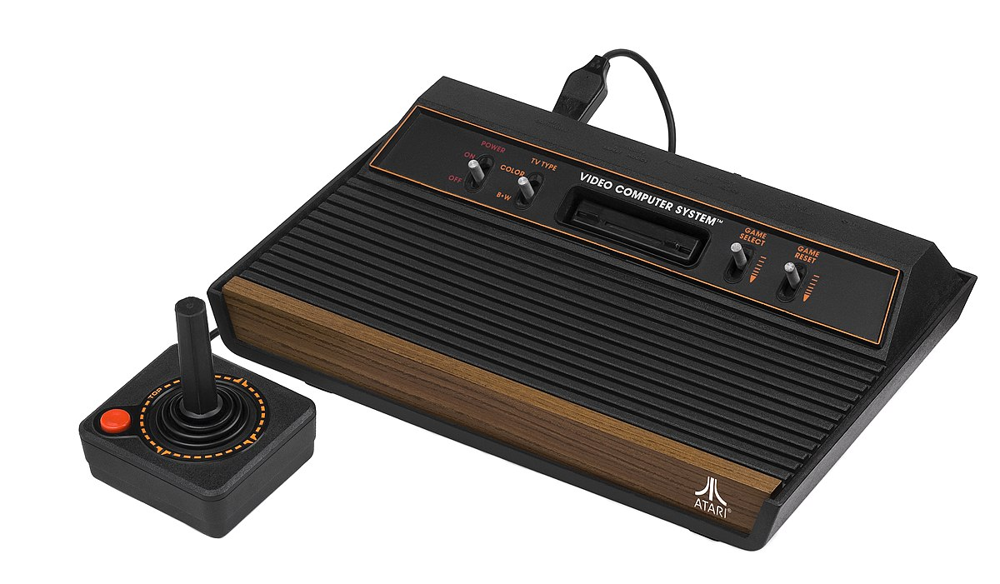
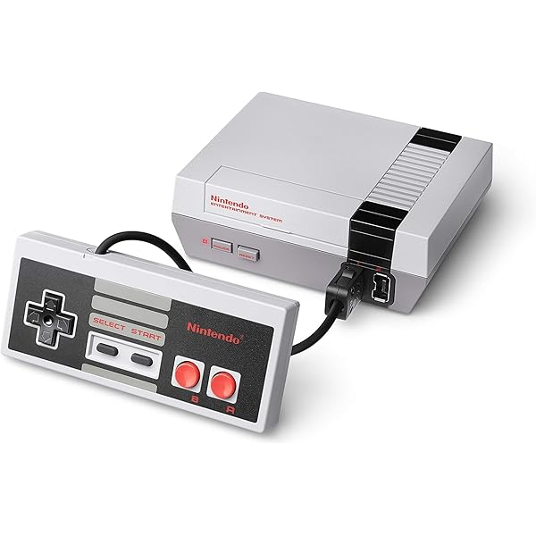
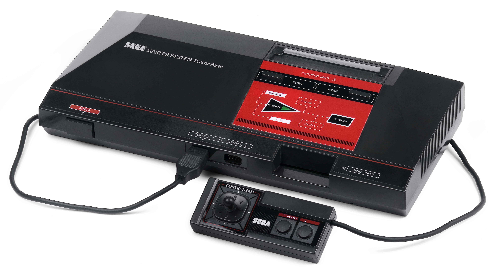

Consolas Clásicas
Las consolas clásicas marcaron el inicio de la era dorada de los videojuegos y sentaron las bases para la industria actual.
-
Atari 2600 (1977):
Una de las primeras consolas de éxito masivo, famosa por juegos como Space Invaders y Pitfall.  -
Nintendo Entertainment System - NES (1983):
Revolucionó el mercado con títulos como Super Mario Bros, The Legend of Zelda y Metroid.  -
Sega Genesis (1988):
Popularizó juegos como Sonic the Hedgehog y fue la principal competencia de Nintendo en los 90.  -
PlayStation (1994):
La primera consola de Sony, famosa por sus gráficos en 3D y juegos como Final Fantasy VII y Gran Turismo.